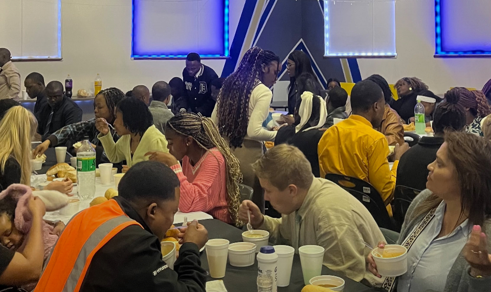

About The Potter's House Melville
.jpeg)
The Potter's House Melville is a Christian Fellowship church under Pentecostal division that is focused on reaching people with the Gospel of Jesus Christ and helping new and old believers develop a strong relationship with God. We believe in the Holy Trinity and the gifts of the Holy Spirit. We are a church-planting church and we have more that 4000 churches across the world.
The church seeks to create an environment where people can worship God, learn from the word of God, the Bible, build meaningful, godly relationships and grow through discipleship.
Our Mission
.jpeg)
Our mission is to spread the Gospel, see souls get saved and help believers become committed followers of Jesus Christ as they live rightously.
Our Vision
Our vision is to build a Christ-centred community that cares for people, reaches people, to raise up disciples, for each believer's purpose to be fulfilled and to positively, to turn the community right-side up and to plant more churches as the gospel reaches all nations.
Our Values
- Faith in Jesus Christ
- Rightous living
- Biblical teaching
- Baptism
- Evangelism
- Discipleship
- Prayer
- Christian fellowship
- Serving others
- Loving others
Our Church Family
Moments of worship, fellowship and reaching souls for Jesus Christ.

